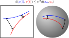
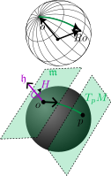
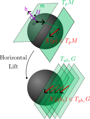
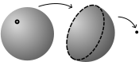
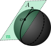
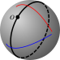

ACC 2025
School of Electrical and Computer Engineering, Georgia Institute of Technology
July 10, 2025

Key Question: Can we simplify Riemannian contraction conditions by adding additional structure to the metric?
Distances are a design tool: warp distances to satisfy desired criterion
Distances are intrinsic to the underlying space: they provide structural intuitions of the dynamics
In this talk: Intrinsic Riemannian metrics that are invariant under an underlying group action on the manifold can be studied via matrix measures.
Bonus: Necessary condition for the existence of a contracting system based on the underlying geometric structure
The distance \(d(x_1,x_2) = d(x_1 + v, x_2 + v) = \|x_1 - x_2\|\) is invariant to translations—i.e., actions of \(\mathbb{R}^n\) on itself
Consider the sphere \[ \mathbb{S}^2 = \{x\in\mathbb{R}^3 : x^Tx = 1\} \] The rotation (Lie) group \(SO(3)\) is a symmetry group of \(\mathbb{S}^2\) since any 3D rotation \(R\) takes \(x\in\mathbb{S}^2\) to \(Rx\in\mathbb{S}^2\).
Riemannian metric \(\langle\!\langle \cdot,\cdot \rangle\!\rangle\) is called invariant if for every \(R\in SO(3)\), \[ \langle\!\langle \underbrace{v,w}_{\in T_x\mathbb{S}^2} \rangle\!\rangle_x = \langle\!\langle \underbrace{Rv,Rw}_{\in T_{Rx}\mathbb{S}^2} \rangle\!\rangle_{Rx} \] The resulting distance satisfies \[ d(Rx,Ry) = d(x,y) \]
Example: \(SO(3)\) acting on \(\mathbb{S}^2\)

Simplified contraction conditions for invariant Riemannian metrics
Global Contraction Criterion Using Levi-Civita Connection [2]
\((U,X,\langle\!\langle \cdot,\cdot \rangle\!\rangle,c)\) is a contracting system if for every \(x\in U\) and \(v\in T_xM\), \[ \langle\!\langle \nabla_v X,v \rangle\!\rangle_x \leq c\langle\!\langle v,v \rangle\!\rangle_x. \] If \(U\) satisfies some conditions (forward completeness, geodesically convex, …) \[ d(\Phi_X^t(x_0),\Phi_X^t(y_0)) \leq e^{ct} d(x_0,y_0). \]
Checking this criterion usually requires coordinates to verify the generalized contraction condition [1]: \[ \frac{\partial X}{\partial x}^T M + M \frac{\partial X}{\partial x} + \dot{M} \preceq 2cM, \] where \(M(x)\) is the positive definite matrix defining the metric in the neighborhood.
Key Question: Can we provide an alternative criterion for the case of an invariant Riemannian metric?
Let \(X\in\mathfrak{X}(M)\) be a \(C^\infty\) smooth vector field.
\(X\) is equivalent to a horizontally lifted vector field \(\overline{X}\in\mathfrak{X}(G)\), \[ X(\pi(g)) = T_g\pi (\overline{X}(g)) \] which can be expressed using basis \(\{A_1,\dots,A_m\}\) for \(\mathfrak{m}\), \[ \overline{X}(g) = \sum_{i=1}^m \overline{X}^i(g) \underbrace{T_e\ell_g(A_i)}_{\text{frame } A_i^L}, \] where \(\overline{X}^i:G\to\mathbb{R}\).
The vector field \(X\) is expressed in terms of \(m\) functions \(\overline{X}^i : G\to \mathbb{R}\), using left-invariant frames \(A^L_i(g) = T_e\ell_g(A_i)\) on the Lie group.

Let \(\mathcal{A}= \{A_1,\dots,A_m\}\) be a basis for \(\mathfrak{m}\). \(X\) is equivalent to a horizontally lifted vector field \(\overline{X}\in\mathfrak{X}(G)\) \[ \overline{X}(g) = \sum_{i=1}^m \overline{X}^i(g) A_i^L(g) \]
Definition
Define the map \(\partial_\mathcal{A}\overline{X}:G\to\mathbb{R}^{m\times m}\) as \[ \partial_\mathcal{A}\overline{X}(g)^i_j = \underbrace{\mathcal{L}_{A_j^L}\overline{X}^i (g)}_{\text{Lie derivative}} + \sum_{k=1}^m \overline{X}^k (g) \alpha^i_{jk}, \] where \(\alpha^i_{jk}\in\mathbb{R}\) are constants dependent on the choice of metric.
Lemma
For any \(g_1,g_2\) such that \(\pi(g_1) = \pi(g_2)\), \[ \partial_\mathcal{A}\overline{X}(g_1) = \partial_\mathcal{A}\overline{X}(g_2). \]
Definition (Horizontal linearization)
Define \(\partial_\mathcal{A}X:M\to\mathbb{R}^{m\times m}\) such that for any representative \(g\) such that \(p = \pi(g)\), \[ \partial_\mathcal{A}X(p) = \partial_\mathcal{A}\overline{X}(g) \]
Let \(M=G/H\) be a reductive homogeneous space, \(\langle\cdot,\cdot\rangle_\mathfrak{m}\) be the inner product defining invariant metric \(\langle\!\langle \cdot,\cdot \rangle\!\rangle\).
Definition (Matrix Measure)
Define the map \(\mu(\partial X(\cdot)) : M\to\mathbb{R}\) as \[ \mu(\partial_\mathcal{A}X(p)) = \sup_{v : \langle v,v\rangle_\mathcal{A}=1}\langle\partial_\mathcal{A}X(p)v, v\rangle_\mathcal{A} \] (this is independent of basis \(\mathcal{A}\))
Theorem
Let \(\langle\!\langle \cdot,\cdot \rangle\!\rangle\) be an invariant metric. \((U,X,\langle\!\langle \cdot,\cdot \rangle\!\rangle,c)\) is a contracting system if and only if \((U,X,\langle\cdot,\cdot\rangle_\mathfrak{m},c)\) is an invariant contracting system.
Global Invariant Contraction Criterion Using Matrix Measures
\((U,X,\langle\cdot,\cdot\rangle_\mathfrak{m},c)\) is an invariant contracting system if for every \(x\in U\), \[ \mu(\partial X(x)) \leq c. \]
Proof uses invariant Levi-Civita characterization from [6]
Given a subset \(U\subseteq M\), can we provide a necessary condition for the existence of a contracting system?
For contracting system \((U,X,\langle\!\langle \cdot,\cdot \rangle\!\rangle,c)\), the flow map \(\Phi_X^t : U\to U\) is a contraction mapping. Thus there is an equilibrium point \(x^*\) (fixed point theorem) such that \[ \Phi_X^t(x^*) = x^*, \] and for any \(x_0\in U\), \[ d(\Phi_X^t(x_0),x^*) \leq e^{ct} d(x_0,x^*). \] A time reparameterization yields a homotopy of \(U\) to \(\{x^*\}\)
\(\implies\) \(U\) is a topologically contractible subset of \(M\).
Corollary
\(U\) cannot be a contraction region if it is not a topologically contractible subset.
Example: \(\mathbb{S}^2\) is compact and therefore not contractible. \(\mathbb{S}^2\setminus\{p\}\) is a topologically contractible set.

Can we find a necessary condition accounting for the geometry?
Intuition: Impossible to contruct an invariant contracting system on the circle \(\mathbb{S}\):
Theorem
Let \((U,X,\langle\cdot,\cdot\rangle,c)\) be an invariant contracting system. If \(A\in\mathfrak{m}\) generates a circular one parameter subgroup, \(U\) cannot contain the full set \(\{\pi(g\exp(tA)) : t\in\mathbb{R}\}\) for any \(g\in G\).
Example: Invariant contracting systems on \(\mathbb{S}^2\) cannot contain great circles.


SO(3) Open-Loop Single Integrator \[ A_X = \left[\begin{smallmatrix} 0 & 0 & 0 \\ 0 & 0 & -1 \\ 0 & 1 & 0 \end{smallmatrix}\right], \ A_Y = \left[\begin{smallmatrix} 0 & 0 & 1 \\ 0 & 0 & 0 \\ -1 & 0 & 0 \end{smallmatrix}\right] \ A_Z = \left[\begin{smallmatrix} 0 & -1 & 0 \\ 1 & 0 & 0 \\ 0 & 0 & 0 \end{smallmatrix}\right], \] \[ \dot{R} = u_1 RA_X + u_2 RA_Y + u_3 RA_Z \] The system is nonexpansive (\(c=0\)), so after simulating a nominal trajectory \(t\mapsto{\mathring{x}}(t)\), we have \[ d(x(t),{\mathring{x}}(t)) \leq d(x(0),{\mathring{x}}(0)). \] Thus, the reachable set from the metric ball \(\mathcal{B}_r({\mathring{x}}(0))\) is \[ \mathcal{R}_t(\mathcal{B}_r({\mathring{x}}(0))) \subseteq \mathcal{B}_r({\mathring{x}}(t)). \]
Thank you for your attention! akashhara.com
Definition (Lie group)
A Lie group is a manifold \(G\) with compatible group structure, i.e., the group operation and inverse are smooth maps satisfying
Definition (Lie group action)
Lie group \(G\) acts on manifold \(X\) if there is a smooth map \(\lambda:G\times X\to X\) satisfying
Notation: \(g\cdot x := \lambda(g,x)\).
Lie group actions define continuous symmetries on a space
Matrix groups (subgroups of \(GL(n)\)) are Lie groups, and act on \(\mathbb{R}^n\) via matrix multiplication.
Example (\(\mathbb{S}\simeq SO(2)\))
Unit circle \(\mathbb{S}= \{e^{i\theta} : \theta\in\mathbb{R}\}\) with the operation \[ e^{i\theta_1} e^{i\theta_2} = e^{i(\theta_1 + \theta_2)} \] and inverse \((e^{i\theta})^{-1} = e^{-i\theta}\).
\(\mathbb{S}\) acts on \(\mathbb{C}\) via multipliation: \[ e^{i\theta} \cdot (re^{i\omega}) = re^{i(\theta + \omega)} \]
Example (\(SO(3)\))
The group of \(3\)D rotations, \[ \{R\in\mathbb{R}^{3\times 3} : R^TR = I,\ \det(R) = +1\}, \] with matrix multiplication as group operation and \(R^{-1} = R^T\).
\(SO(3)\) acts on \(\mathbb{R}^3\) via rotations: \[ R \cdot x = Rx \]
Let \(G\) act on \(M\) transitively: for every \(x_1,x_2\in M\), there exists \(g\in G\) such that \[ g\cdot x_1 = x_2. \]
Running Example: The \(2\)-sphere \(\mathbb{S}^2\)
Consider \(\mathbb{S}^2 = \{x\in\mathbb{R}^3 : x^Tx = 1\}\). For any two points \(x_1,x_2\in\mathbb{S}^2\), there is a rotation \(R\in SO(3)\) such that \[ Rx_1 = x_2. \] Fix some origin point \(o\in\mathbb{S}^2\). Let \(H\subset G\) denote the stabilizer of \(o\), or the set of rotations which fix \(o\): \(h\in H \implies h\cdot o = o\).
Fix an origin \(o\in M\). Let \(H \subseteq G\) be the stabilizer, the set of actions \(h\in G\) where \[ h\cdot o = o. \]
Running Example: The \(2\)-sphere \(\mathbb{S}^2\)
Let \(o=[0,0,1]^T\in\mathbb{S}^2\) be the origin. The stabilizer \(H\) is rotations of the form \[ \begin{bmatrix} \cos\theta & -\sin\theta & 0 \\ \sin\theta & \cos\theta & 0 \\ 0 & 0 & 1 \end{bmatrix} \begin{bmatrix} 0 \\ 0 \\ 1 \end{bmatrix} = \begin{bmatrix} 0 \\ 0 \\ 1 \end{bmatrix} \] Thus \(H\simeq SO(2)\), and \(\mathbb{S}^2 \simeq SO(3) / SO(2)\).
The point \(x\in M\) can be identified with the equivalence class of group actions that take \(o\) to \(x\): e.g., rotations of the form \(RR_h\) which send \[ \underbrace{R}_{\text{to $x$}}\underbrace{R_h}_{\text{about $o$}}o = Ro = x. \]
Let \(\mathfrak{h}\subseteq\mathfrak{g}\) be the Lie subalgebra of the stabilizer \(H\subseteq G\).
The homogeneous space \(M = G/H\) is called reductive if there is a subspace \(\mathfrak{m}\subseteq\mathfrak{g}\) where \(\mathfrak{g}= \mathfrak{h}\oplus \mathfrak{m}\) (and \(\mathfrak{m}\) is \(\operatorname{Ad}_H\)-invariant)
Intuition: Lie algebra \(\mathfrak{g}\) is decompsosed into the subspace \(\mathfrak{h}\) and an orthogonal subspace \(\mathfrak{m}\) (no inner product yet…)
Running Example: The \(2\)-sphere \(\mathbb{S}^2\)
\(\mathfrak{h}\) consists of the skew-symmetric matrices generating the stabilizing rotations \(H\), \[ \begin{bmatrix} 0 & \theta & 0 \\ -\theta & 0 & 0 \\ 0 & 0 & 0 \end{bmatrix}. \] \(\mathfrak{m}\) is spanned by the other two basis elements of skew-symmetric matrices and generates rotations which move along the manifold.
Recall \(M = G/H\), so there is a projection \(\pi:G\to M\) (takes \(g\) to \(g\cdot o\))
Take any \(g\in G\) and let \(p = \pi(g)\). The tangent space \(T_pM\) is identified with \(\mathfrak{m}\) through the tangent map of the projection \[ T_g\pi|_{\mathfrak{m}}:\mathfrak{m}\to T_pM \] Define the horizontal bundle \(\operatorname{Hor}(G)\) as \[ T_gG \supseteq \operatorname{Hor}(G)_g := T_e\ell_g(\mathfrak{m}). \] The fibers are the subspace of \(T_gG\) idenfifying \[ T_pM = T_g\pi(\operatorname{Hor}(G)_g) \]